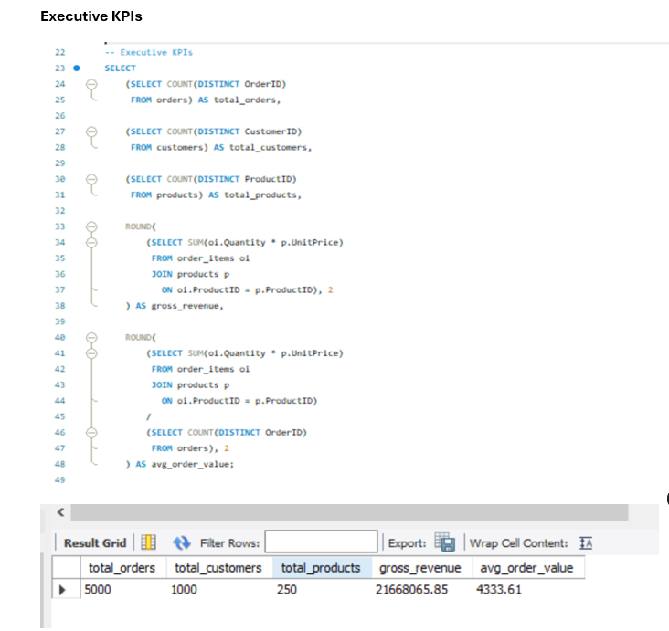
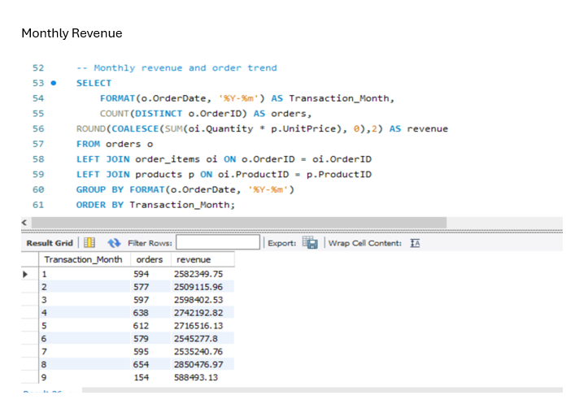
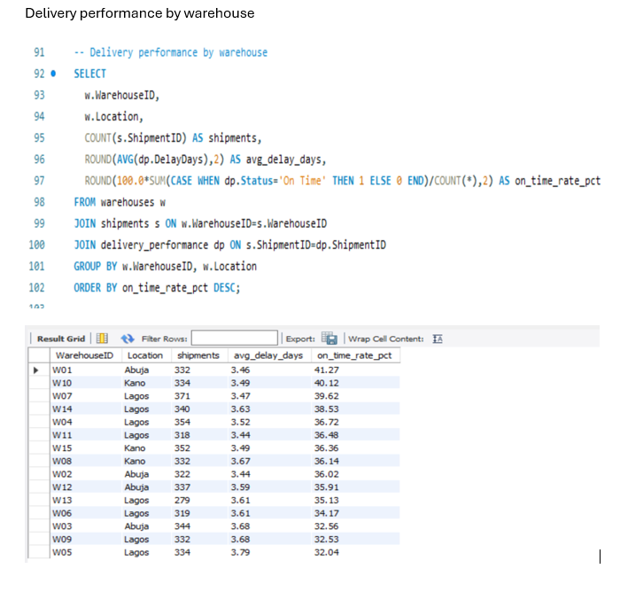
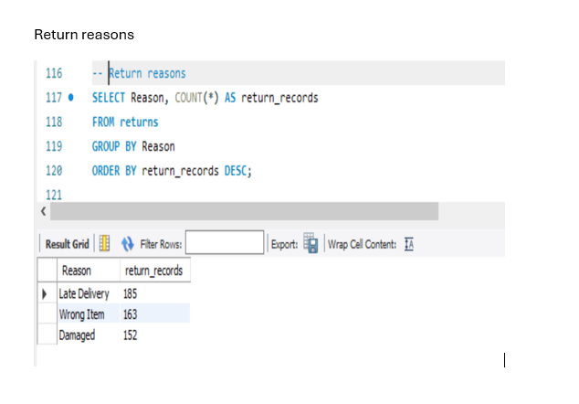
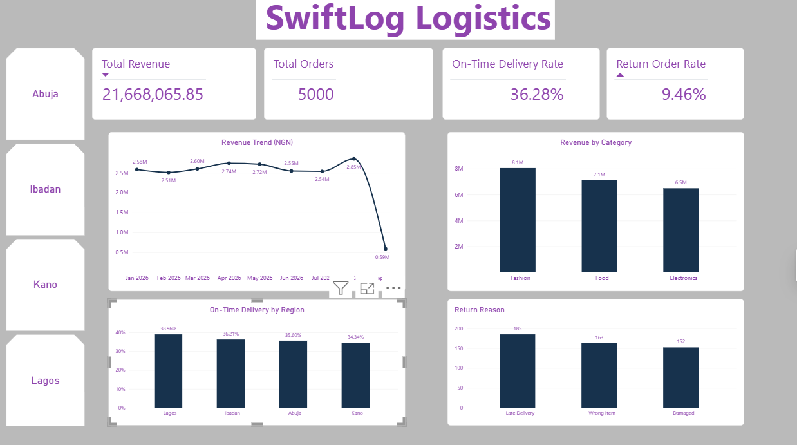
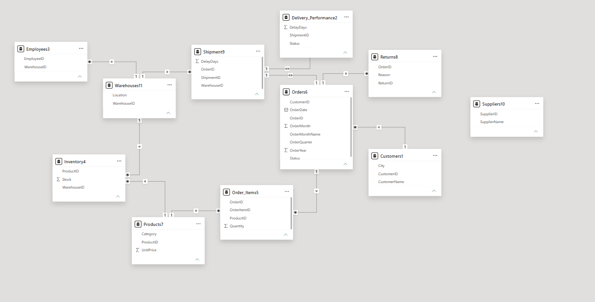

SwiftLog Logistics
Supply Chain Analytics & Business Intelligence
The project documentation establishes the source-data inventory, validates keys and relationships, prepares analysis-ready data, develops business-focused KPIs, builds five Power BI dashboard pages, answers business questions and provides strategic recommendations.
Data import, understanding & preparation
The supplied PDF lists 11 datasets and their analytical purpose.
| Dataset | Rows | Main purpose |
|---|---|---|
| Customers | 1,000 | Customer demographics, location and purchasing behaviour. |
| Orders | 5,000 | Order trends, status and customer purchasing. |
| Order Items | 15,000 | Product quantities and order-line revenue. |
| Products | 250 | Product category and unit pricing. |
| Suppliers | 150 | Supplier master data. |
| Warehouses | 15 | Warehouse locations. |
| Inventory | 4,000 | Warehouse-product stock records. |
| Shipments | 5,000 | Shipment and warehouse activity. |
| Delivery Performance | 5,000 | Delivery status and delay days. |
| Employees | 200 | Workforce allocation by warehouse. |
| Returns | 500 | Returned orders and return reasons. |
Keys
- Orders: OrderID unique.
- Order Items: OrderItemID unique; OrderID and ProductID foreign keys.
- Customers: CustomerID unique.
- Products: ProductID unique.
- Shipments: ShipmentID unique; OrderID and WarehouseID foreign keys.
- Delivery Performance: ShipmentID unique and linked to Shipments.
- Returns: ReturnID unique; OrderID links to Orders.
- Warehouses and Employees use WarehouseID for warehouse relationships.
Relationship coverage
- Orders.CustomerID → Customers.CustomerID: 100%
- Order_Items.OrderID → Orders.OrderID: 100%
- Order_Items.ProductID → Products.ProductID: 100%
- Shipments.OrderID → Orders.OrderID: 100%
- Delivery_Performance.ShipmentID → Shipments.ShipmentID: 100%
- Inventory.ProductID → Products.ProductID: 100%
- Inventory.WarehouseID → Warehouses.WarehouseID: 100%
- Employees.WarehouseID → Warehouses.WarehouseID: 100%
- Returns.OrderID → Orders.OrderID: 100%
Cleaning & transformation
The source document distinguishes genuine duplicate rows from repeated warehouse-product combinations.
| Dataset | Original | Prepared | Transformation |
|---|---|---|---|
| Customers | 1,000 | 1,000 | Validated; no substantive change. |
| Orders | 5,000 | 5,000 | Added Year, Month, Month Name and Quarter. |
| Order Items | 15,000 | 15,000 | Validated; no substantive change. |
| Products | 250 | 250 | Validated; no substantive change. |
| Shipments | 5,000 | 5,000 | Validated; no substantive change. |
| Delivery Performance | 5,000 | 5,000 | Validated; no substantive change. |
| Returns | 500 | 500 | Validated; no substantive change. |
| Inventory | 4,000 | 3,997 | Removed 3 exact duplicate rows. |
| Warehouses | 15 | 15 | Validated; no substantive change. |
| Employees | 200 | 200 | Validated; no substantive change. |
| Suppliers | 150 | 150 | Validated; no substantive change. |
Source-data gaps
- SupplierID link to operational transactions → supplier performance cannot be calculated defensibly.
- Warehouse capacity → true warehouse utilization cannot be calculated.
- Inventory movement or dated snapshots → true inventory turnover cannot be calculated.
- ProductID / ReturnItemID in Returns → product-level return rate cannot be attributed.
- Customer signup/cohort date → formal cohort retention is not possible.
- Product/supplier cost → profitability and margin are not available.
Transformation principles
- Inspect every dataset and its columns.
- Validate data types and key fields.
- Check exact duplicate records.
- Check foreign-key coverage.
- Preserve source values where there is no evidence of error.
- Create OrderYear, OrderMonth, OrderMonthName and OrderQuarter.
- Document unsupported KPIs rather than creating artificial values.
KPI development & DAX
The project distinguishes supported measures from KPIs that the supplied data cannot support defensibly.
SQL analysis & evidence
The SQL work converts the operational tables into management-ready metrics. Each query below is positioned beside the evidence it produced.

1. Executive KPIs
This query establishes the core business measures used across the project: total orders, active customers, products sold, gross revenue and average order value. Revenue is calculated from order quantity multiplied by product unit price.

2. Monthly revenue & order trend
The query groups orders by month, counts distinct orders and calculates revenue from order items and product prices. It supports the business question about peak business activity and feeds the revenue trend visual.

3. Delivery performance by warehouse
The query joins warehouses, shipments and delivery performance to calculate shipment volume, average delay days and on-time delivery rate for each warehouse. This supports warehouse-level operational intervention.

4. Return reasons
The query groups return records by Reason and counts each record. It identifies the leading causes of recorded returns without incorrectly attributing returns to individual products.
Dashboard development
The project delivers five Power BI pages aligned to the assignment structure. The screenshots below make the dashboard work visible as part of the portfolio.



Business analysis & data storytelling
Key answers and management implications from the project document.
Highest-revenue product
P040 in Electronics generated NGN 191,463.68 from 404 units across 73 orders.
Warehouse efficiency
True warehouse utilization cannot be ranked because warehouse capacity is absent. Delivery on-time rate and shipments per employee are used as operational indicators instead.
Supplier performance
Supplier performance cannot be answered from the supplied operational data because SupplierID is not connected to products, orders, shipments, delivery performance or purchasing records.
Product return rates
Product-level return rates cannot be calculated because Returns has no ProductID or ReturnItemID.
Regional delivery
The source analysis reports Lagos as having the largest on-time delivery rate and Kano as having the largest shipment volume.
Peak activity
August is the strongest complete month. September is partial through 8 September and should not be compared directly with full months.
Management attention
- On-Time Delivery Rate: 36.28%.
- Average Delivery Delay: 3.57 days.
- Return Order Rate: 9.46%.
- Lagos delivery reliability: 35.74% on time.
- Inventory quality/grain issue.
Business recommendations
The following recommendations are taken from the supplied SwiftLog project document.
- Set a delivery-reliability target and review on-time performance weekly.
- Investigate Lagos warehouse and last-mile processes.
- Use warehouse-level delay and on-time metrics for interventions.
- Attack late-delivery root causes.
- Protect high-revenue product availability.
- Prioritize Fashion as the largest revenue category while adding cost data before margin decisions.
- Segment repeat customers for targeted retention and loyalty initiatives.
- Add SupplierID links between suppliers and operational purchasing/product flows.
- Add warehouse capacity fields to enable true utilization analysis.
- Add inventory snapshot or movement dates to enable inventory turnover.
- Add ProductID or ReturnItemID to Returns to enable product-level return analysis.
- Add planned and actual delivery timestamps to strengthen delivery-time measurement.
SwiftLog evidence gallery
Every supplied SwiftLog image is included and captioned according to its role in the project documentation.

.png)
.png)
.png)
.png)